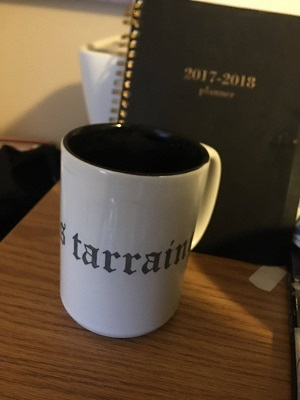
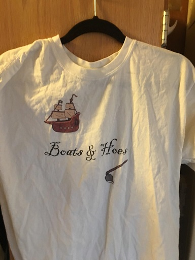
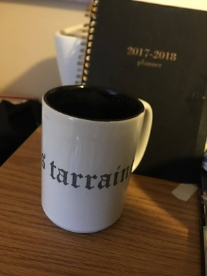
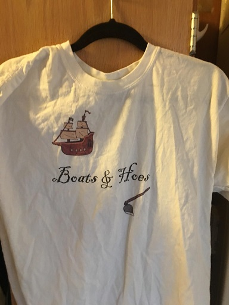

Assignments
1. The T-shirt i=that I designed was from the movie Step Brothers and has the Referance "boats and Hoes" which is a song writen by Prestige World Wide.
AND
2. with my die sublimation, I designed a coffee mug, that has printed words in Gaelic.
Back to index